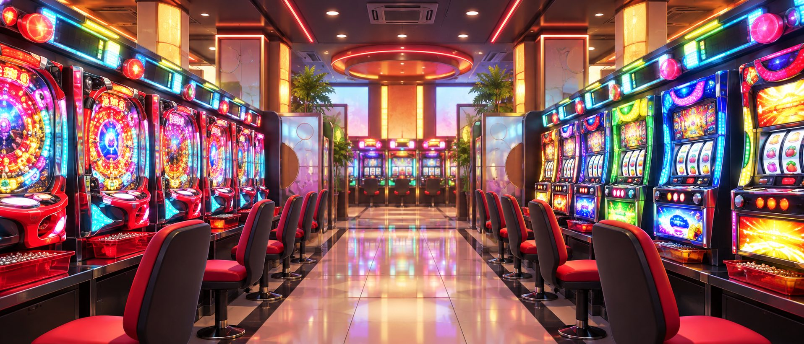
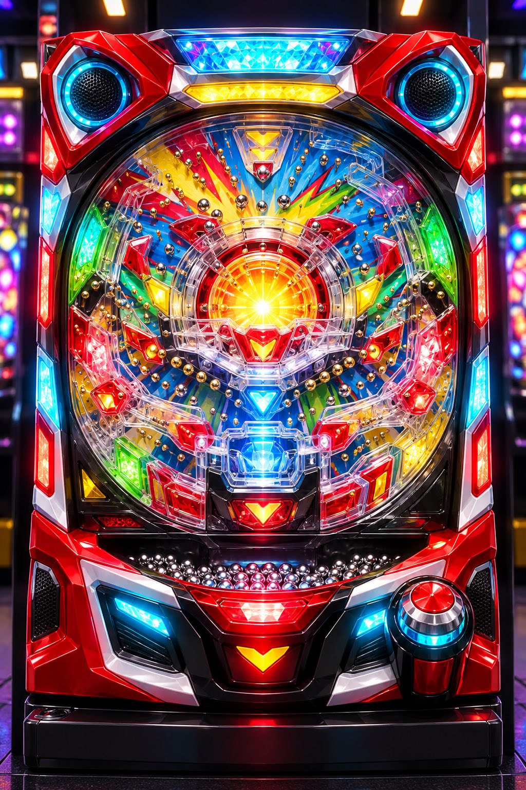
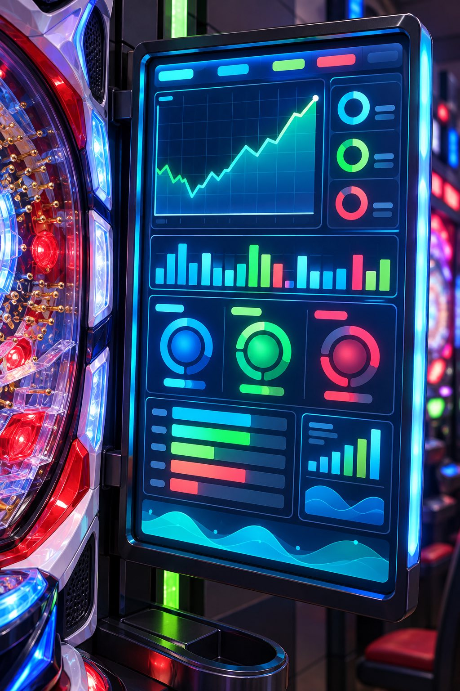
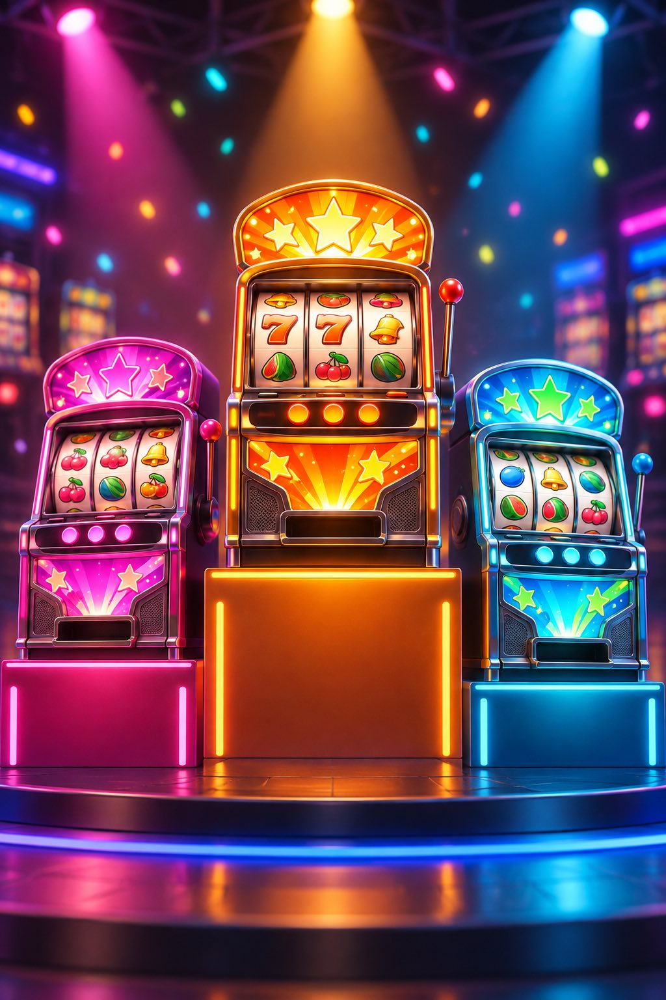
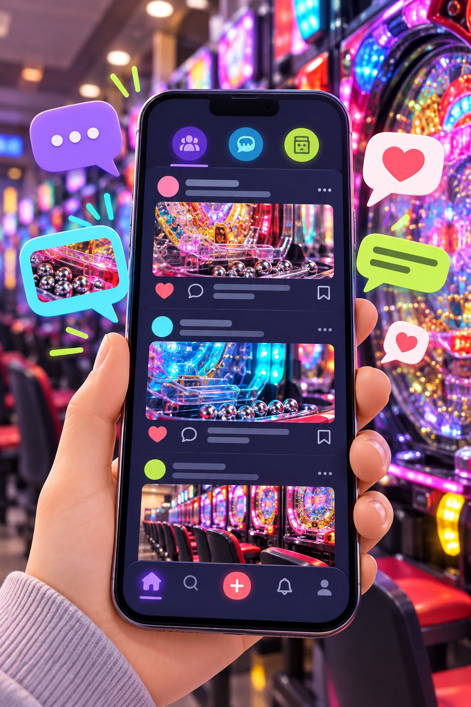
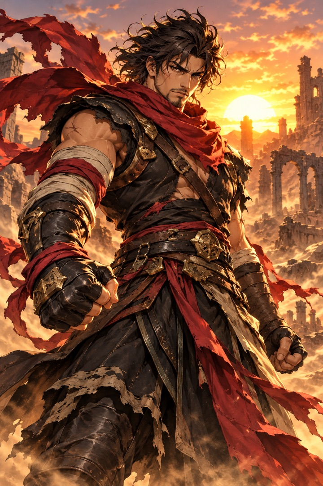

TOP背景
パチンコ・パチスロが並ぶ、明るいゲームセンター風の生成画像です。
TOPページ、機種一覧、シミュレーション演出の画像は、ICHIGEKI用に生成したオリジナル画像です。公式画像や既存作品のキャラクターではなく、実在する機種・店舗・メーカーを表すものではありません。

パチンコ・パチスロが並ぶ、明るいゲームセンター風の生成画像です。

遊技を始めるイメージが伝わるよう、実機風の台を中央に配置しています。

収支や遊技履歴を連想できる、グラフ中心のデータ画面です。

3台の順位を、ゲーム画面のように分かりやすく表現しています。

口コミ・画像投稿・リアクションをスマホ画面で表現しています。

台を見分けやすくするため、43機種と初代ユニコーンに別々のオリジナルキャラクター画像を用意しています。公式キャラクターや公式素材の再現ではありません。